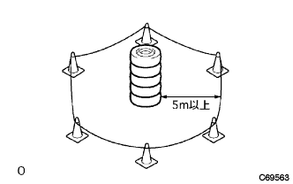

ホーン ボタンASSY 廃却 |
| 1. ホーン ボタンASSY廃却（廃却要領廃車時） |
取り扱い·作業上の注意(要領は参照)
バツテリマイナスターミナル切り離し
ステアリングコラムロワカバー取りはずし
ステアリングホイールASSYを左右に90°回転させ、ステアリングコラムロワカバー前面のスクリュー2本をはずす。
チルトレバーを解除状態にしてステアリングコラムロワカバー下部のスクリューをはずし、ステアリングコラムロワカバーを取りはずす。
 |
スパイラルケーブルからエアバツグ用コネクタを切り離す。
エアバツグ(ホーンボタンASSY)作動
下記2つのSSTを接続する。
SSTのワニ口と端子をシヨートさせる。
 |
SSTとエアバツグ用コネクタ(黄色の2Ｐ)を接続する。
 |
SSTを車両からいっぱいに伸ばし、5m以上離してバツテリーを置く。
車室内および周囲の安全を確認したのち、SSTのワニ口をバツテリーのマイナスに接続する。
SSTの端子をバツテリーのプラスに接続し、エアバツグを作動する。
| 2. ホーン ボタンASSY廃却（廃却要領単品廃却時） |
取り扱い·作業上の注意(要領は参照)
バツテリマイナスターミナル切り離し
ホーンボタンASSY取りはずし(要領は参照)
ホーンボタンASSY固定
ホーンボタンASSYの取り付け穴2個に、それぞれプレートワツシヤーを通したボルトを手で十分に締め付ける。
 |
下記2つのSSTを接続し、ホーンボタンASSYにSSTを接続する。
ワイヤハーネス(芯線断面積1.25mm2以上)を使用して、デイスクホイールにホーンボタンASSYを固定する。
エアバツグ(ホーンボタンASSY)作動
下記のSSTをデイスクホイール下側から接続する。
SSTのワニ口と端子をシヨートさせる。
SSTとエアバツグ用コネクターをデイスクホイールの下側で接続する。
下図のようにホーンボタンASSYを固定したデイスクホイールの上にタイヤ3本以上重ね、一番上にデイスクホイール付きタイヤを置く。
 |
タイヤの相互を線径1.8mm以上の針金(普通鉄線の一般用：ＪＩＳ規格SWM-B相当)を使用して、下図のように2重巻き以上で巻きたるみがないように縛り固定する。
SSTをいっぱいに伸ばし、タイヤから5m以上離した位置にバツテリーを置く。

|  |
タイヤ外側から半径5m以上の位置にパイロンなどで人が立ち入らないように囲む。
周囲の安全を確認したのち、SSTのワニ口をバツテリーマイナスに接続する。
SSTの端子をバツテリーのプラスに接続し、エアバツグ(ホーンボタンASSY)を作動する。
エアバツグ(ホーンボタンASSY)廃却要領
 |
作動したエアバツグ(ホーンボタンASSY)は丈夫で透明なビニール袋に入れ、密封し破棄する。